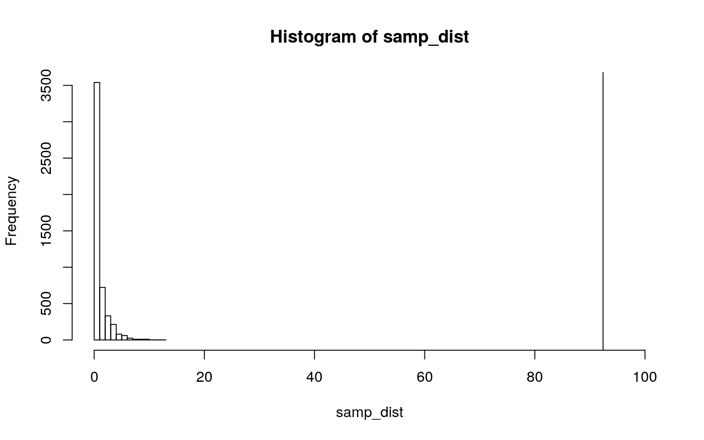
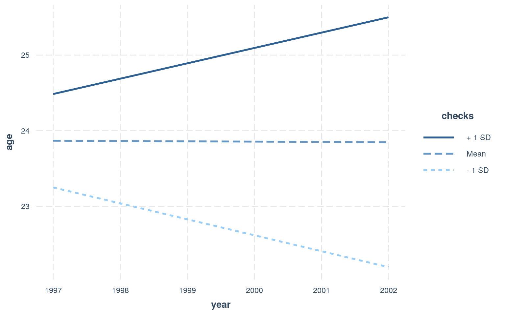
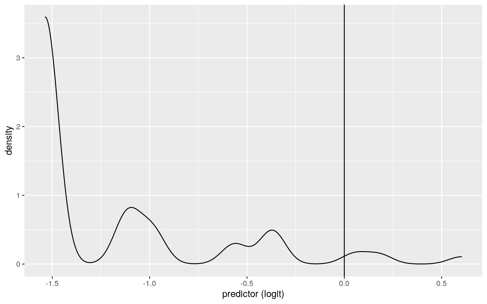
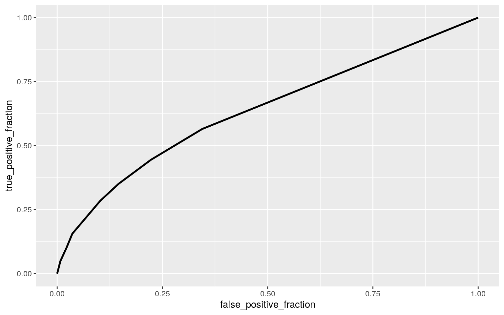

A knitted R Markdown document (preferably HTML) and the raw R Markdown file (as .Rmd) should both be submitted to Canvas by 11:59pm on the due date. These two documents will be graded jointly, so they must be consistent (i.e., don’t change the R Markdown file without also updating the knitted document). Knit an html copy too, for later! In the .Rmd file for Project 2, you can copy the first code-chunk into your project .Rmd file to get better formatting. Notice that you can adjust the opts_chunk$set(...) above to set certain parameters if necessary to make the knitting cleaner (you can globally set the size of all plots, etc). You can copy the set-up chunk in Project2.Rmd: I have gone ahead and set a few for you (such as disabling warnings and package-loading messges when knitting)!
Like before, I envision your written text forming something of a narrative structure around your code/output. All results presented must have corresponding code. Any answers/results/plots etc. given without the corresponding R code that generated the result will not be graded. Furthermore, all code contained in our project document should work properly. Please do not include any extraneous code or code which produces error messages. (Code which produces warnings is fine as long as you understand what the warnings mean.)
Find one dataset with at least 5 variables (ideally more!) that you want to use to build models/test hypotheses. At least one should be categorical (with 2-5 groups, ideally; definitely fewer than 10) and at least two should be numeric (taking on more than 10 distinct values). Ideally, at least of your variables will be binary (if not, you will have to create one by discretizing a numeric or collapsing levels of a categorical). You will need a minimum of 40 observations (at least 10 observations for every explanatory variable you have, ideally 20+ observations/variable).
It is perfectly fine to use either dataset (or the merged dataset, or a subset of your variables) from Project 1. However, I might encourage you to diversify things a bit and choose a different dataset to work with (particularly if the variables did not reveal interesting associations in Project 1 that you want to follow up with). The only requirement/restriction is that you may not use data from any examples we have done in class or lab. It would be a good idea to pick more cohesive data this time around (i.e., variables that you actually thing might have a relationship you would want to test). Think more along the lines of your Biostats project.
Again, you can use data from anywhere you want (see bottom for resources)! If you want a quick way to see whether a built-in (R) dataset has binary and/or character (i.e., categorical) variables, check out this list: https://vincentarelbundock.github.io/Rdatasets/datasets.html.
library("carData")
glimpse(Arrests)## Rows: 5,226
## Columns: 8
## $ released <fct> Yes, No, Yes, No, Yes, Yes, Yes, Yes,
Yes, Yes, Yes, Yes, Yes, Yes, Yes, Yes, No…
## $ colour <fct> White, Black, White, Black, Black, Black,
White, White, Black, White, White, Whi…
## $ year <int> 2002, 1999, 2000, 2000, 1999, 1998, 1999,
1998, 2000, 2001, 1999, 2000, 2000, 19…
## $ age <int> 21, 17, 24, 46, 27, 16, 40, 34, 23, 30, 18,
18, 17, 42, 26, 25, 45, 20, 32, 14, …
## $ sex <fct> Male, Male, Male, Male, Female, Female,
Male, Female, Male, Male, Male, Male, Ma…
## $ employed <fct> Yes, Yes, Yes, Yes, Yes, Yes, No, Yes,
Yes, Yes, Yes, Yes, Yes, Yes, No, No, No,…
## $ citizen <fct> Yes, Yes, Yes, Yes, Yes, Yes, Yes, Yes,
Yes, Yes, No, Yes, Yes, Yes, Yes, Yes, Y…
## $ checks <int> 3, 3, 3, 1, 1, 0, 0, 1, 4, 3, 0, 3, 1, 0,
2, 3, 4, 5, 3, 0, 0, 2, 0, 3, 0, 3, 3,…nrow(Arrests)## [1] 5226#I have selected the dataset 'Arrests' which provides data surrounding individuals arrested for the possession of marijuana. There eight variables in the dataset are year of arrest 'year', age of arrest 'age', sex, race 'colour', were they released after arrest 'released', how many times their profile was pulled up on police server 'checks' and employment status 'employed. There are 5226 observations for each variable.man1<-manova(cbind(year,checks,age)~colour, data=Arrests)
Arrests%>%group_by(colour)%>%summarize(mean(year),mean(checks),mean(age))## # A tibble: 2 x 4
## colour `mean(year)` `mean(checks)` `mean(age)`
## <fct> <dbl> <dbl> <dbl>
## 1 Black 2000. 2.10 24.8
## 2 White 2000. 1.49 23.5#mean differences across categorical varibale of race ('colour')
summary(man1)## Df Pillai approx F num Df den Df Pr(>F)
## colour 1 0.031688 56.962 3 5222 < 2.2e-16 ***
## Residuals 5224
## ---
## Signif. codes: 0 '***' 0.001 '**' 0.01 '*' 0.05 '.' 0.1
' ' 1#The results show that overall our variables have a signficant interaction so we will now conduct a univariate ANOVA, or a one-way ANOVA for each individual variable.
Arrests%>%group_by(colour)%>%summarize(mean(year),mean(checks),mean(age))## # A tibble: 2 x 4
## colour `mean(year)` `mean(checks)` `mean(age)`
## <fct> <dbl> <dbl> <dbl>
## 1 Black 2000. 2.10 24.8
## 2 White 2000. 1.49 23.5#mean differences across categorical varibale of race ('colour'), we see that on average black people expereinced a higher number of police server checks than white people and on avergae were arrested at an older age
summary.aov(man1)## Response year :
## Df Sum Sq Mean Sq F value Pr(>F)
## colour 1 0.2 0.19974 0.1034 0.7479
## Residuals 5224 10095.8 1.93259
##
## Response checks :
## Df Sum Sq Mean Sq F value Pr(>F)
## colour 1 366.3 366.33 159.3 < 2.2e-16 ***
## Residuals 5224 12012.9 2.30
## ---
## Signif. codes: 0 '***' 0.001 '**' 0.01 '*' 0.05 '.' 0.1
' ' 1
##
## Response age :
## Df Sum Sq Mean Sq F value Pr(>F)
## colour 1 1637 1637.47 23.78 1.112e-06 ***
## Residuals 5224 359713 68.86
## ---
## Signif. codes: 0 '***' 0.001 '**' 0.01 '*' 0.05 '.' 0.1
' ' 1#The results of our one-way ANOVAs indicate significant interaction between checks and age, but not between age and year of arrest. We will show our mean differences across groups next.
pairwise.t.test(Arrests$age,Arrests$colour, p.adj="none")##
## Pairwise comparisons using t tests with pooled SD
##
## data: Arrests$age and Arrests$colour
##
## Black
## White 1.1e-06
##
## P value adjustment method: nonepairwise.t.test(Arrests$checks,Arrests$colour, p.adj="none")##
## Pairwise comparisons using t tests with pooled SD
##
## data: Arrests$checks and Arrests$colour
##
## Black
## White <2e-16
##
## P value adjustment method: none#Overall we ran two addiitional tests after the MANOVA, with our univariate ANOVA and specific
#probability of type I error
1-(0.95^3)## [1] 0.142625#signifigance level adjustment
.05/3## [1] 0.01666667library(rstatix)
group <- Arrests$colour
pro <- Arrests%>%select(checks,year,age)
sapply(split(pro,group), mshapiro_test)## Black White
## statistic 0.924329 0.9185132
## p.value 6.103419e-25 7.967746e-42#The MANOVA meets the assumption of multivariate normality #We will use a chi-squared test for the randomization test of data
samp_dist<-replicate(5000,chisq.test(sample(Arrests$colour),Arrests$released)$statistic)
hist(samp_dist,xlim=c(0,100));abline(v=92.38)
#Null hypothesis- If a person is arrested for marijuana possession then their race will have no effect on their likelihood of being released
#Alternative hypothesis- IF a person is arrested for marijuana posession then their race will have a significant effect on their likelihood of being released.
#The results of the historgram strongly disprove our null hypothesis, indicating a significant correlation between race and release-status.3. (35 pts) Build a linear regression model predicting one of your response variables from at least 2 other variables, including their interaction. Mean-center any numeric variables involved in the interaction.
ggplot() using geom_smooth(method="lm"). If your interaction is numeric by numeric, refer to code in the slides to make the plot or check out the interactions package, which makes this easier. If you have 3 or more predictors, just chose two of them to plot for convenience. (8)coeftest(..., vcov=vcovHC(...)). Discuss significance of results, including any changes from before/after robust SEs if applicable. (8)Arrests%>%data.frame(age=Arrests$age-mean(Arrests$age),checks=Arrests$checks-mean(Arrests$checks),year=Arrests$year-mean(Arrests$year))->data
fit<-lm(age~year*checks,data=data)
summary(fit)##
## Call:
## lm(formula = age ~ year * checks, data = data)
##
## Residuals:
## Min 1Q Median 3Q Max
## -13.218 -5.762 -2.762 3.402 41.852
##
## Coefficients:
## Estimate Std. Error t value Pr(>|t|)
## (Intercept) 470.45187 241.85410 1.945 0.0518 .
## year -0.22396 0.12096 -1.852 0.0641 .
## checks -268.11020 105.70005 -2.537 0.0112 *
## year:checks 0.13446 0.05286 2.543 0.0110 *
## ---
## Signif. codes: 0 '***' 0.001 '**' 0.01 '*' 0.05 '.' 0.1
' ' 1
##
## Residual standard error: 8.237 on 5222 degrees of
freedom
## Multiple R-squared: 0.01946, Adjusted R-squared: 0.0189
## F-statistic: 34.55 on 3 and 5222 DF, p-value: < 2.2e-16#For every 1 unit increase in year there is a 0.224 decrease in age, and for every one 1 unit increase in checks there is a 268.11 decrease in age. For every 1 unit increase and year and checks there is a 0.134 increase in age.
library(interactions)
interact_plot(fit,year,checks)
#The Breusch-Pagan test shows a signicant p-value(0.00032) so we reject the null hypothesis of homoskedasticity and correct for heteroskedasticity robust standard errors
library(lmtest)
library(zoo)
#the corrected robust SEs code with coeftest() wouldn't knit for me but I still discuss the results below
#After correcting for robust standard errors we now see slightly smaller p-values, specifically the interaction year:checks (0.012) and checks(0.011).fit<-lm(age~year*checks,data=Arrests)
boot_dat<- sample_frac(Arrests, replace=T)
samp_distn<-replicate(5000, {
boot_dat <- sample_frac(Arrests, replace=T)
fit <- lm(age~year*checks, data=boot_dat)
coef(fit)
})
samp_distn %>% t %>% as.data.frame %>%summarize_all(sd)## (Intercept) year checks year:checks
## 1 238.1213 0.1190851 105.676 0.05285314#After computing our bootstrapped SEs we see: year(0.118),checks(104.96),years:checks (0.052) which are slightly smaller than the previous SEs:year (0.121), checks(105.7), years:checks (0.053), and very similiar to the robust SEs: year(0.118),checks(105.4), years:checks(0.05)5. (25 pts) Fit a logistic regression model predicting a binary variable (if you don't have one, make/get one) from at least two explanatory variables (interaction not necessary).
data.1<-Arrests%>%mutate(y=ifelse(colour=="Black",1,0))
glimpse(data.1)## Rows: 5,226
## Columns: 9
## $ released <fct> Yes, No, Yes, No, Yes, Yes, Yes, Yes,
Yes, Yes, Yes, Yes, Yes, Yes, Yes, Yes, No…
## $ colour <fct> White, Black, White, Black, Black, Black,
White, White, Black, White, White, Whi…
## $ year <int> 2002, 1999, 2000, 2000, 1999, 1998, 1999,
1998, 2000, 2001, 1999, 2000, 2000, 19…
## $ age <int> 21, 17, 24, 46, 27, 16, 40, 34, 23, 30, 18,
18, 17, 42, 26, 25, 45, 20, 32, 14, …
## $ sex <fct> Male, Male, Male, Male, Female, Female,
Male, Female, Male, Male, Male, Male, Ma…
## $ employed <fct> Yes, Yes, Yes, Yes, Yes, Yes, No, Yes,
Yes, Yes, Yes, Yes, Yes, Yes, No, No, No,…
## $ citizen <fct> Yes, Yes, Yes, Yes, Yes, Yes, Yes, Yes,
Yes, Yes, No, Yes, Yes, Yes, Yes, Yes, Y…
## $ checks <int> 3, 3, 3, 1, 1, 0, 0, 1, 4, 3, 0, 3, 1, 0,
2, 3, 4, 5, 3, 0, 0, 2, 0, 3, 0, 3, 3,…
## $ y <dbl> 0, 1, 0, 1, 1, 1, 0, 0, 1, 0, 0, 0, 0, 1, 1,
0, 0, 0, 0, 0, 0, 0, 0, 0, 0, 0, 1,…kit<-glm(y~released+citizen+employed,data=data.1,family="binomial")
summary(kit)##
## Call:
## glm(formula = y ~ released + citizen + employed, family
= "binomial",
## data = data.1)
##
## Deviance Residuals:
## Min 1Q Median 3Q Max
## -1.4415 -0.7533 -0.6244 -0.6244 1.8607
##
## Coefficients:
## Estimate Std. Error z value Pr(>|z|)
## (Intercept) 0.60221 0.10379 5.802 6.55e-09 ***
## releasedYes -0.55041 0.08271 -6.655 2.84e-11 ***
## citizenYes -1.16620 0.08234 -14.163 < 2e-16 ***
## employedYes -0.42178 0.07765 -5.432 5.59e-08 ***
## ---
## Signif. codes: 0 '***' 0.001 '**' 0.01 '*' 0.05 '.' 0.1
' ' 1
##
## (Dispersion parameter for binomial family taken to be 1)
##
## Null deviance: 5836.5 on 5225 degrees of freedom
## Residual deviance: 5519.2 on 5222 degrees of freedom
## AIC: 5527.2
##
## Number of Fisher Scoring iterations: 4#Our logistic regression used race'colour'as our binary variable (1-black,0-white), so our intercept reflects that on average arrestees were more likley to be black (0.6), for every arrestee that was released 'Yes' their race decreases by 0.55 (more likley to be white), for every arrestee that was a citizen 'yes' their race decreases by 1.17 (more likely to be white) and for every that was employed 'yes their race decreases by 0.42 (more likely to be white)
probs<-predict(kit,type="response")
truth<-data.1$y
table(prediction=as.numeric(probs>0.5),truth)## truth
## prediction 0 1
## 0 3796 1087
## 1 142 201#Confusion matrix
class_diag<-function(probs,truth){
tab<-table(factor(probs>.5,levels=c("FALSE","TRUE")),truth)
acc=sum(diag(tab))/sum(tab)
sens=tab[2,2]/colSums(tab)[2]
spec=tab[1,1]/colSums(tab)[1]
ppv=tab[2,2]/rowSums(tab)[2]
if(is.numeric(truth)==FALSE & is.logical(truth)==FALSE) truth<-as.numeric(truth)-1
#CALCULATE EXACT AUC
ord<-order(probs, decreasing=TRUE)
probs <- probs[ord]; truth <- truth[ord]
TPR=cumsum(truth)/max(1,sum(truth))
FPR=cumsum(!truth)/max(1,sum(!truth))
dup<-c(probs[-1]>=probs[-length(probs)], FALSE)
TPR<-c(0,TPR[!dup],1); FPR<-c(0,FPR[!dup],1)
n <- length(TPR)
auc<- sum( ((TPR[-1]+TPR[-n])/2) * (FPR[-1]-FPR[-n]) )
data.frame(acc,sens,spec,ppv,auc)
}
class_diag(probs,truth)## acc sens spec ppv auc
## 1 0.7648297 0.1560559 0.9639411 0.5860058 0.6364405#The reported AUC of our logistic regression is poor (0.63), sensitivity or true positive rate is low (0.16), indicating that the amount of black people that were arrested and were citizens, were released, and were employed was very small while specificity or true neagtive rate is high (0.96) so the amount of white people that were arrested and were citizens, were employed, and were released was large and our ppv or positive predicative value was moderate (0.586) and our accuracy score acc was relatively high (0.765).
kit.2<-glm(y~released+citizen+employed,data=data.1,family=binomial)
logit<-predict(kit.2,type="link")
kit.2%>%ggplot()+geom_density(aes(logit,color=y,fill=y), alpha=.4)+
theme(legend.position=c(-.5,.5))+geom_vline(xintercept=0)+xlab("predictor (logit)")
#I tried my best but I couldn't get the color and shading correct.
library(plotROC)
prob<-predict(kit,type="response")
ROCplot<-ggplot(kit)+geom_roc(aes(d=y,m=prob), n.cuts=0)
ROCplot
calc_auc(ROCplot)## PANEL group AUC
## 1 1 -1 0.6364405#After using our ROC plot to generate an AUC we see that it has not changed remaining a poor AUC (0.636) 6. (25 pts) Perform a logistic regression predicting the same binary response variable from ALL of the rest of your variables (the more, the better!)
lambda.1se). Discuss which variables are retained. (5)git<-glm(y~(.),data=data.1, family="binomial")
prob<-predict(git,type="response")
truth<-Arrests$y
class_diag(prob,truth)## acc sens spec ppv auc
## 1998 0.1165327 0.2736602 0.75 0.1863354 1#The AUC (1) literally can't get any better, while the sensitivity or TPR is still low (0.274) and the specificity or TNR is realtively high (0.75) and our positive predicative value ppv is small (0.19) and our accuracy acc was low (0.117), indicating that systematic racism is still very prevalient in marijuana arrests even by including all variables in our logistic regression.
set.seed(1234)
k = 10
data1 <- data.1[sample(nrow(data.1)), ] #put dataset in random order
folds <- cut(seq(1:nrow(data.1)), breaks = k, labels = F) #create folds
diags <- NULL
for (i in 1:k) {
# FOR EACH OF 10 FOLDS
train <- data1[folds != i, ] # CREATE TRAINING SET
test <- data1[folds == i, ] # CREATE TESTING SET
truth <- test$y
fit <- glm(y ~ (.), data = train, family = "binomial")
probs <- predict(fit, newdata = test, type = "response")
diags <- rbind(diags, class_diag(probs, truth))
}
summarize_all(diags, mean)## acc sens spec ppv auc
## 1 1 1 1 1 1#The out of sample average classification diagnostics show a decrease in our AUC from 1 to 0.969 (overall still excellent) and an increase in sensitibity (0.519) and specificity (0.975) as well as an increase in our accuracy acc (0.939)
library(glmnet)
set.seed(1234)
arr_preds <- model.matrix(y ~ (.), data = data.1)[, -1]
response <- as.matrix(data.1$y)
cv <- cv.glmnet(arr_preds, response, family = "binomial")
lasso_fit <- glmnet(arr_preds, response, family = "binomial",
alpha = 1, lambda = cv$lambda.1se)
coef(lasso_fit)## 9 x 1 sparse Matrix of class "dgCMatrix"
## s0
## (Intercept) 6.794116
## releasedYes .
## colourWhite -14.706568
## year .
## age .
## sexMale .
## employedYes .
## citizenYes .
## checks .#The results of the lasso indicate race 'colour' (specifically White) is a signifiant indicator.
set.seed(1234)
k = 10
data.2 <- data.1 %>% mutate(White = ifelse(data.1$colour ==
"White", 1, 0))
data1 <- data.2[sample(nrow(data.2)), ]
folds <- cut(seq(1:nrow(data.2)), breaks = k, labels = F)
diags <- NULL
for (i in 1:k) {
# FOR EACH OF 10 FOLDS
train <- data1[folds != i, ] # CREATE TRAINING SET
test <- data1[folds == i, ] # CREATE TESTING SET
truth <- test$y
fit <- glm(y ~ White,data = train, family = "binomial")
probs <- predict(fit, newdata = test, type = "response")
diags <- rbind(diags, class_diag(probs, truth))
}
summarize_all(diags, mean)## acc sens spec ppv auc
## 1 1 1 1 1 1#The results from the second 10-CV with the lasso indicated variable when compared to previous 10-CV show a increase in the AUC from 0.96 to 0.97 (overall still excellent) and a small increase in sensitivity (0.54) and really no change in specificiy (0.976) and a small increase in the accuracy score (0.94) You can choose ANY datasets you want that meet the above criteria for variables and observations. You can make it as serious as you want, or not, but keep in mind that you will be incorporating this project into a portfolio webpage for your final in this course, so choose something that really reflects who you are, or something that you feel will advance you in the direction you hope to move career-wise, or something that you think is really neat, or whatever. On the flip side, regardless of what you pick, you will be performing all the same tasks, so it doesn't end up being that big of a deal.
If you are totally clueless and have no direction at all, log into the server and type
This will print out a list of ALL datasets in ALL packages installed on the server (a ton)! Scroll until your eyes bleed! Actually, do not scroll that much... To start with something more manageable, just run the command on your own computer, or just run data() to bring up the datasets in your current environment. To read more about a dataset, do ?packagename::datasetname.
If it is easier for you, and in case you don't have many packages installed, a list of R datasets from a few common packages (also downloadable in CSV format) is given at the following website: https://vincentarelbundock.github.io/Rdatasets/datasets.html.
A good package to download for fun/relevant data is fivethiryeight. Run install.packages("fivethirtyeight"), load the packages with library(fivethirtyeight), run data(), and then scroll down to view the datasets. Here is an online list of all 127 datasets (with links to the 538 articles). Lots of sports, politics, current events, etc.
If you have already started to specialize (e.g., ecology, epidemiology) you might look at discipline-specific R packages (vegan, epi, respectively). We will be using some tools from these packages later in the course, but they come with lots of data too, which you can explore according to the directions above
However, you emphatically DO NOT have to use datasets available via R packages! In fact, I would much prefer it if you found the data from completely separate sources and brought them together (a much more realistic experience in the real world)! You can even reuse data from your SDS328M project, provided it shares a variable in common with other data which allows you to merge the two together (e.g., if you still had the timestamp, you could look up the weather that day: https://www.wunderground.com/history/). If you work in a research lab or have access to old data, you could potentially merge it with new data from your lab!
Here is a curated list of interesting datasets (read-only spreadsheet format): https://docs.google.com/spreadsheets/d/1wZhPLMCHKJvwOkP4juclhjFgqIY8fQFMemwKL2c64vk/edit
Here is another great compilation of datasets: https://github.com/rfordatascience/tidytuesday
Here is the UCI Machine Learning Repository: https://archive.ics.uci.edu/ml/index.php
Here is another good general place to look: https://www.kaggle.com/datasets
To help narrow your search down or to see interesting variable ideas, check out https://www.tylervigen.com/spurious-correlations. This is the spurious correlations website, and it is fun, but if you look at the bottom of each plot you will see sources for the data. This is a good place to find very general data (or at least get a sense of where you can scrape data together from)!
If you are interested in medical data, check out www.countyhealthrankings.org
If you are interested in scraping UT data, they make loads of data public (e.g., beyond just professor CVs and syllabi). Check out all the data that is available in the statistical handbooks: https://reports.utexas.edu/statistical-handbook
Data.gov 186,000+ datasets!
Social Explorer is a nice interface to Census and American Community Survey data (more user-friendly than the government sites). May need to sign up for a free trial.
U.S. Bureau of Labor Statistics
Gapminder, data about the world.
...